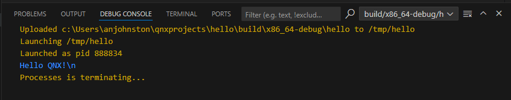
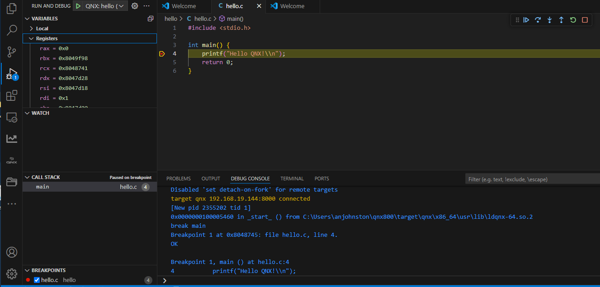
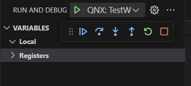
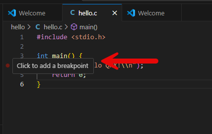

Launching an application
You can run your program as a standalone binary.
- From the Workspace, right-click the program's project folder.
- Navigate to QNX > Run as QNX Application.
- Click Run as QNX Application.
- Select the default launch configuration from the palette. The QNX Toolkit uses the default settings to build and launch the program. The output of the Hello World program is displayed in the debug console.

Debugging an application
You can debug your active program using QNX Toolkit. You need to attach to a binary, so the debugger can match binary instructions with lines of code.
- From the workspace, right-click the program's project folder.
- Click QNX > Debug as QNX Application.
- Select the launch configuration for debugging. The QNX Toolkit runs, and you can use the features of the debugger to inspect the program.

- QNX Toolkit switches to the Run and Debug view and transfers your program from your
development host to your target system; then it starts the program under the control of the debugger.
The debugger stops in the first line of your program.
In the QNX Toolkit Debug side bar,
you'll see an overview of your process, including the call stack. Using the buttons in the Debug toolbar, you can control the debugger.

- When you run or debug your application from QNX Toolkit, any input is read
from the IDE's console, and any output goes to it.
After execution has passed the line that calls printf, you
should see the
Hello QNX!
message in the Debug console.
About the debugger
Using the Step Over button, you can jump to the next line of code: 
During debugging, you can watch the variables in the Debug side bar, which displays how your variables change. You can use the Step Into button to let the debugger go into the code of a function.

You can also perform operations on the file system by mounting the remote file system in
the QNX Toolkit Explorer. After mounting, you can perform file operations, such as
manually transferring your binary, and then running it. For more information about
remote file system operations, go to Remote file system operations
in the Using the Target Navigator
chapter of the QNX Toolkit for Visual Studio Code Guide.
Next steps
To extend the Hello World project, you can modify and extend the source code. Consult the documentation to get in-depth information: You can view the QNX OS System Architecture guide, the QNX Toolkit User's Guide, and the QNX OS Programmer's Guide. If you've used earlier versions of QNX SDP, see also Migrating to QNX OS 8.0.
If you have further questions, contact your QNX Account Manager, Field Application Engineer, or our support department, and visit our Foundry27 community website (https://community.qnx.com).